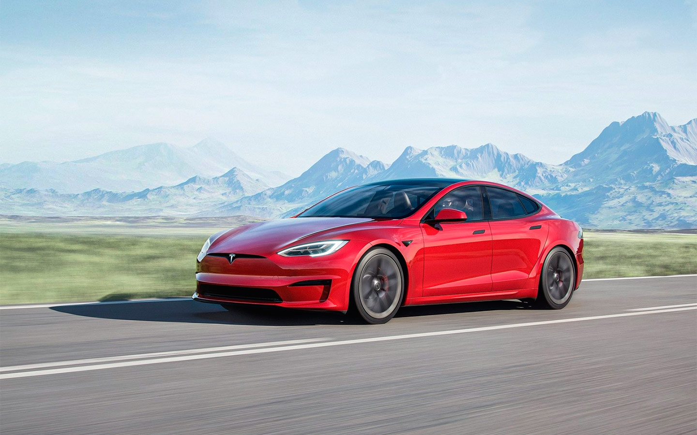
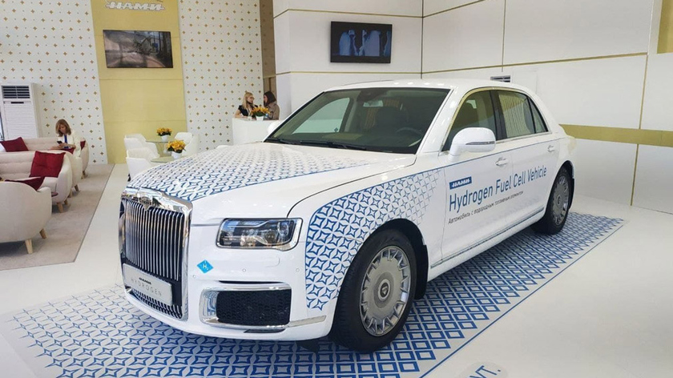

| Экологически чистые автомобили часто называют «зелёными». Использование бензина и производство выбросов в атмосферу у таких авто минимально. Мировой автопром в последние годы делает на этом поприще огромные успехи, создавая новые эко-модели и усовершенствуя старые образцы. | |
| Первым по экологичности на данный момент считаются электрически автомобили. Они не выбрасывают в атмосферу вредные вещества, обычно заряжаются используя неиссякаемые природные ресурсы, например - ветер, воду или солнечную энергию. Но есть у них и минусы - дороговизна сборки и медленная скорость зарядки. |
 Самый популярный электромобиль - Tesla |
| Ещё не ставшими популярными являются водородные автомобили. Автомобили с водородными двигателями называют главными конкурентами электрокаров. На специальных заправках топливный бак заправляют сжатым водородом. Он поступает в топливный элемент, где есть мембрана, которая разделяет собой камеры с анодом и катодом. В первую поступает водород, а во вторую — кислород из воздухозаборника. По сути, это — тот же электромобиль, только с другим аккумулятором. Водородные автомобили эффективнее, имеют больший запас хода и заправляются куда быстрее электромобилей. Но они более опасные и дорогие. |
 Пример авто с водородным двигателем |